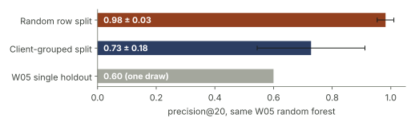
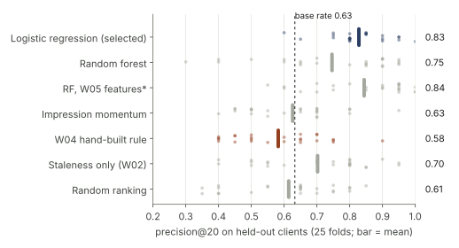
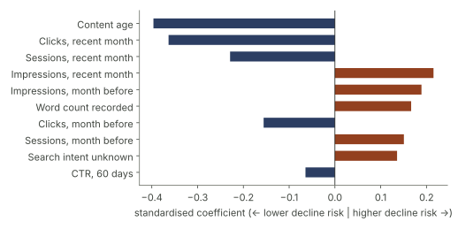
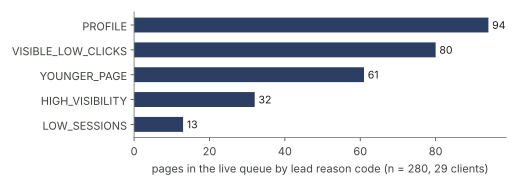

A content-refresh review queue that only uses what an editor could know in advance — validated on clients it never saw, and honest about where the earlier, better-looking numbers came from.
Editors choose which pages to refresh each month by gut feel, so this project asks whether a ranked queue can pick the pages that are about to lose more than 20% of their search impressions. It uses FlyRank's anonymized content-refresh dataset: 30,000 pages from 32 clients, of which 21,578 pages have enough traffic for a decline to be meaningful. A logistic regression sees only information from before the outcome month and is evaluated on 25 client-grouped folds, against the base rate, a staleness rule, and the hand-built rule from earlier weeks. On clients it never trained on, it raised precision@20 from a 0.63 base rate to 0.83 (± 0.09), while the staleness rule and the hand-built W04 rule ranked no better than chance (AUC 0.49 and 0.52). The lift is concentrated at the top of the list (overall AUC ≈ 0.62), so the output is a per-client top-10 review queue with reason codes — decision support for where to look first, not a traffic forecast or proof that refreshing works.
An editor opens a client's site with time to refresh maybe ten pages this month, out of hundreds. Individual numbers are visible — page age, clicks, search demand — but nothing turns them into an ordered list. So the pick defaults to "oldest first" or "lowest traffic first", and nobody checks afterwards whether those were the right pages.
This paper treats the task as ranking, not forecasting. The editor doesn't need next month's exact traffic; they need the top of the list to be pages that genuinely are about to slide. A wrong pick costs an editor hour on a healthy page; a miss lets a page keep losing visibility.
The path matters, because two earlier "results" turned out not to hold:
Release: the FlyRank ML Internship anonymized starter slice (content_refresh_anonymized.csv): 30,000 pages, 32 pseudonymized clients, one 90-day snapshot. Every page is at least 90 days old. The full gated warehouse release (FlyRank/internship-warehouse, queried with DuckDB) was used in W03 for the data contract and leakage demonstration; the model stays on the starter slice so every number here can be re-run without an access token.
Time windows: search impressions, clicks and sessions are given for days 1–30, days 31–60 and the full 90 days, all counted back from export. Days 61–90 follow by subtraction.
| Scope | Pages | Clients | Declining rate |
|---|---|---|---|
| All pages | 30,000 | 32 | 0.542 |
| Measurable (≥ 30 impressions in days 31–60) — modelled | 21,578 | 31 | 0.615 |
| Scored for the live queue (≥ 30 impressions in days 1–30) | 20,128 | 29 | — (future) |
trend_direction, trend_pct — the label is computed from them.No client names, domains, URLs or search queries appear anywhere in this paper or the repository; IDs are pseudonyms.
A page is declining when its impressions in days 1–30 are more than 20% below days 31–60 (trend_direction == "down" in the dataset), on measurable pages only. It is a proxy: seasonality, SERP layout changes or tracking gaps can produce the same drop.
A forecast an editor can act on may only use information that existed before the outcome month started. So the model is trained as if the decision were made 30 days ago:
The W05 features — 90-day CTR, average position, impressions, clicks, engagement, and the last-update date — all include days 1–30. A page that dropped in that month also shows a worse 90-day position and CTR, and 68% of pages show an "update" inside that month. Those features describe the decline rather than anticipate it. With one snapshot, this also means position and engagement drop out of the model entirely: the CSV has no earlier sub-window for them.
Log impressions, clicks and sessions for each of the two pre-outcome months; impression momentum between them; 60-day CTR; content age; word count; keyword search volume, competition and CPC with explicit "has data" flags (missingness follows content type, so a blind fill would smuggle the type in); content type; search intent.
| Baseline | What it ranks by |
|---|---|
| Random ranking | Nothing — its precision equals the base rate |
| Staleness only (W02) | Days since last update |
| W04 rule | Stale (≥ 91 days) AND CTR under half its position-tier benchmark, scored by impressions; benchmark fit on training clients only |
| Momentum | Pages that just rose month-over-month will fall back |
impressions_last_30d (the outcome itself) sends precision@20 to 1.000. If it hadn't, the evaluation harness would be broken.

| Approach (same 25 folds) | P@20 | P@50 | Per-client P@10 | AUC |
|---|---|---|---|---|
| Random ranking (base rate 0.633) | 0.614 | 0.622 | 0.605 | 0.495 |
| Staleness only (W02) | 0.702 | 0.702 | 0.617 | 0.489 |
| W04 rule | 0.582 | 0.586 | 0.618 | 0.522 |
| Momentum | 0.626 | 0.652 | 0.612 | 0.481 |
| Random forest, honest features | 0.746 | 0.774 | 0.730 | 0.625 |
| Logistic regression, honest features (selected) | 0.828 | 0.818 | 0.758 | 0.616 |
| Random forest, W05 features (overlapping — not deployable) | 0.844 | 0.864 | 0.828 | 0.662 |

Two directional observations, not causes. Visible-but-unclicked pages are at higher risk — the CTR intuition behind the W04 rule survives, as a continuous signal rather than a hard threshold. Younger pages are at higher risk than older ones, the opposite of "stale pages decay". In this slice, declining pages had a median age of 216 days vs 291 for growing pages, which also runs against the direction reported in FlyRank's March 2026 study. That study covers a broader population that includes much younger pages, so this is a scoping difference worth testing, not a contradiction.
Everything here is observed in one dataset, measured on held-out clients, and offered as decision support. Nothing here identifies how a search engine ranks pages, and nothing shows that refreshing a page causes it to recover.
The live queue (W07) scores 20,128 pages and gives each of 29 clients a top-10 review list — 280 pages: 180 REVIEW_FIRST (highest risk, at least median traffic), 93 WATCH (high risk, little traffic), 7 CTR_CHECK. Every page carries up to two reason codes, built from the model's own per-page contributions so they explain the actual score.

PROFILE — led by metadata such as unknown search intent — is the weakest code and gets reviewed last.| # | Page | Action | Reason codes | Impr. 30d | Clicks 30d | Age |
|---|---|---|---|---|---|---|
| 1 | …f14938 | REVIEW_FIRST | VISIBLE_LOW_CLICKS · YOUNGER_PAGE | 821 | 0 | 95d |
| 2 | …ef361f | REVIEW_FIRST | HIGH_VISIBILITY · LOW_SESSIONS | 1,092 | 0 | 112d |
| 3 | …3dcb7c | REVIEW_FIRST | VISIBLE_LOW_CLICKS · YOUNGER_PAGE | 2,666 | 1 | 103d |
| 4 | …553583 | REVIEW_FIRST | VISIBLE_LOW_CLICKS · YOUNGER_PAGE | 1,547 | 0 | 103d |
| 5 | …50d0be | REVIEW_FIRST | VISIBLE_LOW_CLICKS · YOUNGER_PAGE | 519 | 0 | 98d |
The pattern is concrete and checkable in a minute per page: around 100 days old, hundreds to thousands of monthly impressions, and almost no clicks.
REVIEW_FIRST pages first — highest decline risk with real traffic at stake.VISIBLE_LOW_CLICKS, start with the title and meta description. Impressions without clicks is the cheapest thing to test; check which queries the page is shown for before rewriting the body.YOUNGER_PAGE, check whether rankings are still settling before a full rewrite.PROFILE-led and WATCH pages last, and re-check them next month.Everything runs on the starter CSV shipped in the repository (no token needed), with fixed seeds (random_state=42; fold shuffles seeded 0–4). Shared logic lives in work/refresh_lib.py.
git clone https://github.com/Shwetabh1013/flyrank-ml-internship-shwetabh
cd flyrank-ml-internship-shwetabh && pip install -r requirements.txt
cd work/notebooks
jupyter nbconvert --to notebook --execute --inplace capstone.ipynb # runs W06 + W07 first if needed (~6 min)| Week | Notebook | What it adds |
|---|---|---|
| W01 | w01_research_question | Lane, question, metric |
| W02 | w02_ml_task_framing | Heuristic vs staleness baseline |
| W03 | w03_data_contract | Warehouse data contract, leakage trap |
| W04 | w04_baseline_score | Signal verdicts, rule baseline |
| W05 | w05_model | First trained models, single holdout |
| W06 | w06_validation_audit | Grouped CV, window-overlap fix, final comparison |
| W07 | w07_action_playbook | Live queue, reason codes, monitoring |
| Capstone | capstone | Every number and chart on this page |
Repository: github.com/Shwetabh1013/flyrank-ml-internship-shwetabh
Built on the FlyRank ML Internship dataset — flyrank.ai. Thanks to the FlyRank team for the anonymized data, the warehouse release, and the internship's skills library, whose leakage and honest-claims checklists shaped the W06 audit.
Background reference: FlyRank, The State of AI-Driven SEO, March 2026 (included in the repository's docs/).